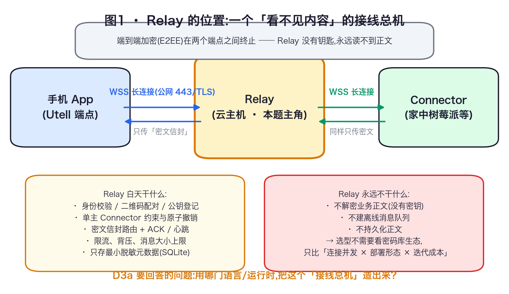
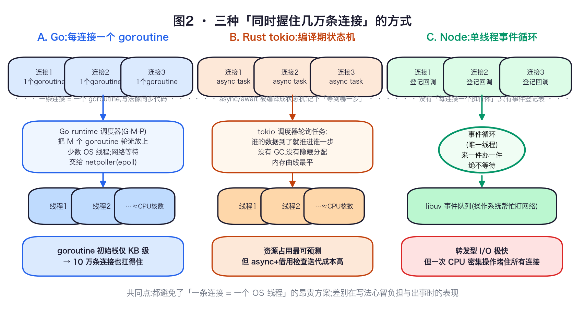
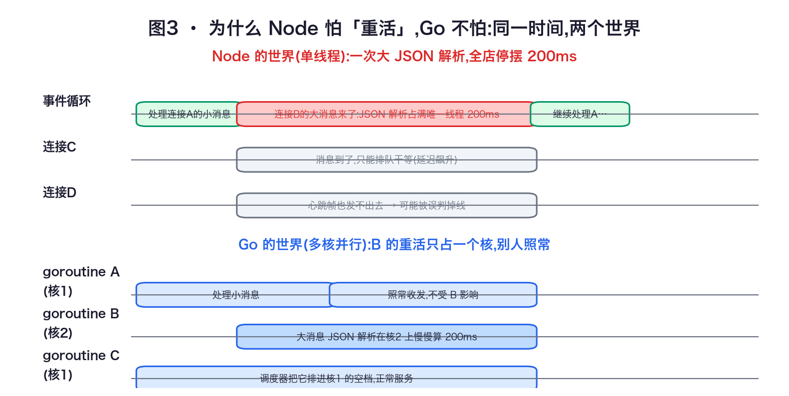
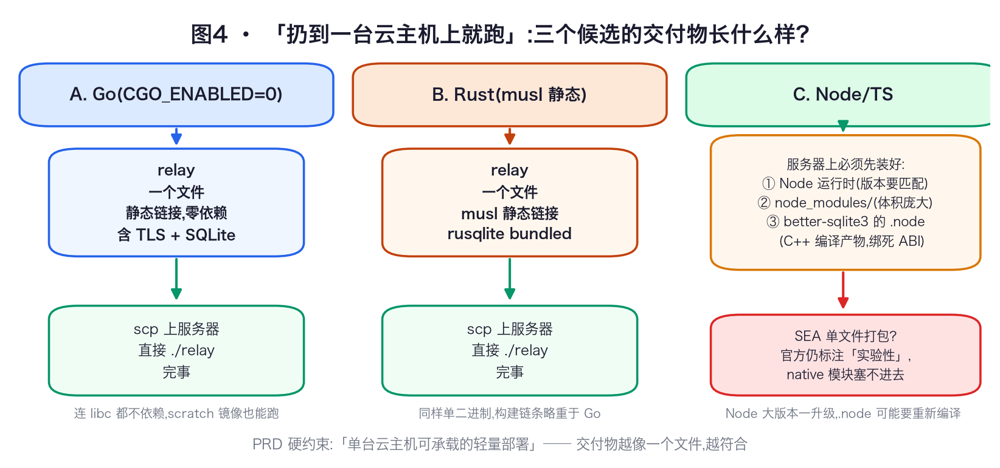
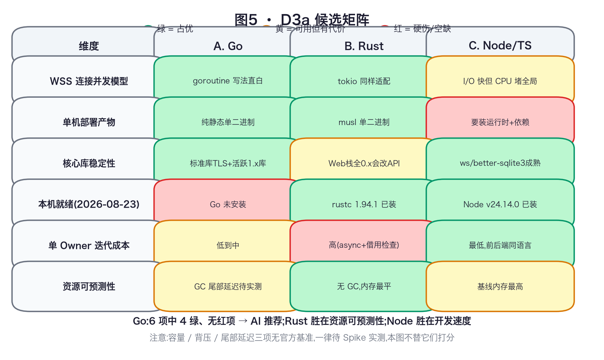

对应证据文档:文档/技术选型/TS-SV-2026-001-Relay语言与运行形态.md
本文是一本能从头读到尾的书:先讲清 Relay 要干什么,再讲清三门语言「同时握住几万条连接」的不同内功,最后落到对比矩阵和推荐结论。零基础可读;每个术语第一次出现时都会解释。生成日期:2026-08-23。
骨架一张图(图1):先看清 Relay 站在哪、干什么、不干什么——它的「不干」直接决定了选型时哪些维度根本不用比。

这本书不管什么(边界):手机端和 Connector 端用什么技术、端到端加密协议怎么选、业务数据库怎么设计——那些是别的决策编号(TS-PH-2026-001 等)的事。本书只管一件事:Relay 这个中转层,用哪门语言/运行时、以什么形态部署到一台云主机上。
三个候选一句话登场(先混个脸熟,每章再细讲):
想象一个老式电话局的接线员,但蒙着眼睛:
| PRD 硬约束(原文意思) | 推导出的选型维度 | 为什么 |
|---|---|---|
| 公网入口 443/TLS/WSS;心跳、ACK、序号、背压、限流 | WSS 连接并发模型 | 几万条同时在线、大部分时间空闲的长连接,是三件事里最挑语言内功的一件 |
| 首发单台云主机;不引入 K8s/Redis/Kafka | 单机部署产物形态 | 交付物是「一个文件」还是「一个运行时 + 一堆依赖」,直接决定运维负担 |
| 证书自动续期、稳定运行 | 核心库稳定性 | WebSocket 库、TLS 库、SQLite 驱动若停更或接口老变,单 Owner 会被升级拖死 |
| 只有一个开发者(单 Owner) | 迭代成本 | 写代码、改代码、追升级的时间全部出自同一个人 |
| 轻量部署、可备份可回滚 | 资源可预测性 | 内存占用是否平稳、会不会偶发卡顿,决定这台云主机要买多大 |
到这里,本书剩下的任务就是:第 2 章把「连接并发模型」这个最硬的概念彻底讲懂(它是三章候选介绍的公共地基),第 3~5 章各讲一个候选,第 6 章合并对比并给出裁决。
操作系统里,「线程」是能被调度到 CPU 上执行的最小单位。最朴素的写法是:来一条连接,开一个线程专门伺候它,线程阻塞在「等消息」上,消息来了就处理。
这个写法死在两个数字上:
所以三个候选都放弃了这个方案,分歧只在于「用什么更便宜的东西代替线程」。
Go 的做法是自己造了一种比线程便宜三个数量级的执行体:goroutine。你写代码时,就当每条连接配了一个专属服务员:读消息、处理、回写,全是直来直去的「同步写法」——但底下没有一个是真的操作系统线程。
它便宜在哪、又怎么运转?拆开看三个零件:
合起来跑一遍:连接 A 的 goroutine 读到一半没数据 → 挂起,连接登记进 epoll → 工人转去跑连接 B 的 goroutine → 连接 A 来数据,epoll 按铃 → goroutine A 被排回某个工人,从上次停下的地方继续。全程没有线程阻塞,没有昂贵的操作系统级切换,而你的代码读起来就是「读 → 处理 → 写」三行直白的顺序语句。
Rust 没有内置运行时,它的异步生态由一个库提供:tokio(事实标准,已发布稳定的 1.x)。写法上用 async/await:函数里遇到 .await(等待网络数据)就「让出」。关键在底下发生了什么——编译器把每个 async 函数改写成一个状态机:一个数据结构,记下「我执行到第几步、局部变量都是什么」。tokio 调度器拿着几万个这样的状态机轮询(poll):谁的数据到了,就把谁推进到下一个 .await,推不动就放下换下一个。
和 goroutine 的本质区别:goroutine 带自己的栈(虽小但存在),切换由运行时动态决定;Rust 状态机没有独立栈,「等到哪一步」全部编译期算好、大小固定,没有任何隐藏开销。所以 Rust 的内存占用和性能曲线是三者中最平、最可预测的——这正是「资源可预测性最强」的来源。
Node.js 的思路最激进:干脆只用一个线程(事件循环,event loop),配合底层的 libuv 库盯着所有网络事件。任何操作都不许「等」:读数据?登记一个「数据到了就执行」的回调函数,立刻返回。定时器、网络、文件,全部变成「事件 + 回调」的登记表。事件循环线程一圈圈地转:有事件到就执行对应回调,执行完马上看下一个。
对 Relay 这种转发型负载(收进来、看一眼门牌、转出去,几乎没有计算),单线程反而极快——没有切换、没有锁。Node 生态在 WebSocket 场景因此一直很热闹。
但它有一条铁律,Node 官方文档的标题就是警告:"Don't block the event loop"(别堵住事件循环)。回调里的代码是跑在那唯一的线程上的:任何一小段需要 CPU 连续计算的代码(解析一个超大 JSON、压缩、遍历大列表),都会让全店所有连接的处理全部排队等它。等多久,所有人的延迟就涨多久——包括心跳帧,而心跳超时会触发误判掉线。规避手段是 worker_threads(把重活丢给后台线程),但那等于额外发明一套排班制度,通信还有序列化成本。


本章结论:对「海量空闲连接 + 偶尔转发 + 偶发小重活」这个负载画像,goroutine 和 tokio 都天然适配;事件循环适配转发本身,但给「偶发重活」留了全局阻塞的隐患。这是候选 C 在矩阵里唯一一项被打上「有代价」的内功项。
Go 生态的 WebSocket 库有一段值得一听的历史。老牌选手 gorilla/websocket 曾是绝对标准,但它已经事实停滞(仓库归档、最后提交停在 2025 年初,安全问题无人修)。社区共识和现行指南都指向继承者 coder/websocket(原名 nhooyr/websocket):2026 年 6 月仍在发版,API 更贴合 Go 习惯,而且修掉了 gorilla 最危险的一个坑——
要理解这个库为什么重要,先得理解 cgo。SQLite 本身是用 C 语言写的;Go 程序想用它,传统方式是走 cgo——Go 和 C 之间的「翻译官桥」。桥在,编译出来的程序就带了 C 世界的镣铐:依赖系统的 C 运行库(libc),编译时还要装 C 工具链,交叉编译(在 Mac 上编 Linux 服务器用的程序)变得麻烦,最致命的是——没法再编成完全静态的单文件。
modernc.org/sqlite 用了一个釜底抽薪的办法:用 ccgo 这个「C → Go 自动转译器」,把 SQLite 的全部 C 源码机器翻译成了纯 Go 代码,随版本持续跟进。于是整个链路——TLS(标准库)、WebSocket(coder)、SQLite(modernc)——没有一个字节的 C 代码。编译时设 CGO_ENABLED=0(关掉翻译官桥),出来的就是一个纯静态单二进制。
TLS 是给网络连接加密的协议(就是 HTTPS/WSS 里那个「S」)。Go 把 TLS 实现在了标准库里(crypto/tls),不依赖任何第三方库,跟随 Go 半年一次的发布节奏获得安全更新。对「公网入口 443/TLS」这条硬约束,这是零附加依赖的满足方式。

CGO_ENABLED=0 go build,产出一个文件 relay,scp 上传、./relay 启动,收工。服务器上连 libc 都不需要——这就是「单台云主机轻量部署」的最简形态。Go 方案的代价清单(诚实版):
Go 靠 GC 自动收垃圾,代价是偶发停顿;C/C++ 靠人肉管理内存,代价是悬垂指针、双重释放这类安全漏洞。Rust 走了第三条路:所有权(ownership)+ 借用检查(borrow checker)。规则一句话:每块内存在任一时刻只有一个「所有者」,别人只能按严格规则「借用」,编译器在编译期逐条审查。审查通过,运行时就不需要 GC——内存什么时候释放,编译那一刻就完全确定。这就是「资源可预测性最强」的机制根源:不是跑得快那么简单,而是它的资源曲线在上线前就是可推导的。
栈上(tokio async task 状态机,第 2 章)+ 内存上(无 GC),两层叠加,Rust 是三者里「这台机器跑起来什么样,最能提前算出来」的候选。
.await 时,审计规则会变得更绕,新手常被编译器反复打回。对单 Owner 项目,这不是一次性学费,是每次迭代都要交的税。
Rust 核心工具链(tokio 1.x、编译器本身)非常稳,但搭 Relay 需要的 Web 层零件,版本号清一色是 0 开头:
| 零件 | 干什么 | 版本(2026-08-22 核实) | 状态 |
|---|---|---|---|
| tokio | 异步调度器 | 1.x | 稳定 |
| axum | HTTP/Web 框架 | 0.8.9 | 0.x |
| tokio-tungstenite | WebSocket 库 | 0.30.0 | 0.x |
| sqlx | 数据库访问 | 0.9 | 0.x |
| rusqlite | SQLite 驱动(bundled,自带编译好的 SQLite) | 0.40.2 | 0.x |
| rustls | 纯 Rust 的 TLS(替代系统 OpenSSL) | 0.23.43 | 0.x |
「0.x」不是版本洁癖问题,它有精确的含义:按语义化版本(semver)约定,0.x 的每一次 minor 升级(0.8 → 0.9)都允许破坏 API——函数改名、参数重排、类型重构都合法。对这些库,升级不是「更新一下拿安全补丁」,而是「可能要改自己的代码」。axum 从 0.6 到 0.7 到 0.8 就都带破坏性变更。单 Owner 追六个这样的库,是持续不断的维护税;不追,安全补丁拿不到。
Rust 方案小结:单二进制同样做得到(用 musl 目标静态链接,rusqlite 选 bundled),本机 rustc 1.94.1 已就绪,运行时表现会是三者里最稳的。它输的不是能力,是单 Owner 的时间账:借用检查的迭代税 + 六个 0.x 库的升级税。证据文档把这条写成它的「最强失败场景:0.x 升级破坏 + 迭代速度税」。
Node 方案(ws 库做 WebSocket、better-sqlite3 做存储)的开发体验确实最好:TypeScript 的类型系统让前后端同一种语言;ws 和 better-sqlite3 都是成熟到「无聊」的库,2026 年 8 月当月还在发版,维护活跃度三者最高。如果决策只看「多快能写出能跑的 Relay」,Node 会赢。
Node 程序的运行需要:服务器上装好 Node 运行时本身 + 项目依赖目录 node_modules/(动辄几百 MB)+ better-sqlite3 这种 C++ 写的原生模块。Node 官方有单文件打包方案 SEA(Single Executable Applications),但官方文档至今仍标注为实验性,且有一个对本方案致命的限定:只能塞一个 JS 文件进二进制,native 模块(.node 文件,编译好的 C++ 代码)塞不进去——而 better-sqlite3 恰恰就是 native 模块。也就是说对「Relay = 单文件」这个目标,SEA 在结构上就不成立,不是成熟度问题。
ABI(应用二进制接口)可以理解成「电器插头的规格」:better-sqlite3 的 .node 文件是按某个 Node 大版本的「插座规格」编译的。Node 每出一个大版本,内部接口可能变,插座换了规格,旧的 .node 就插不进去,必须在目标机器上重新编译原生模块——编译又需要 C++ 工具链。于是「升级 Node 拿安全补丁」这件本该一行命令的事,变成「升级 → 重编译 native 模块 → 祈祷编译环境齐全」的运维流程。Go/Rust 把 SQLite 编进自己的二进制里,完全没有这一层。
第 2 章图3 已经看过:Relay 大部分是转发(快),但「大消息反序列化、限流统计、批量撤销写入」这类偶发 CPU 尖刺,在单线程模型下是全局事件——所有连接的心跳和转发一起延迟。可以用 worker_threads 把重活挪走,但那引入了线程间通信与序列化成本,等于在自己动手补回 Go 调度器免费给的东西。
Node 方案小结:它输的三项里,「开发最快」的优点一点没掺假——如果 Utell 是一个求快速试错的 Web 产品,Node 完全可能是正确答案。但 D3a 的约束画像恰好每一条都踩在它的短板上:要单文件轻量部署(它最重)、要长期无人值守稳定运行(ABI 和升级税)、要偶发重活不伤及无辜(事件循环)。

| 维度 | A. Go | B. Rust | C. Node/TS |
|---|---|---|---|
| 组合 | Go + coder/websocket + modernc.org/sqlite + 标准库 TLS | tokio + axum/tokio-tungstenite + rusqlite(bundled) + rustls | Node LTS + ws + better-sqlite3 |
| 版本(2026-08-22 E1 核实) | Go 1.27.0(2026-08-19);coder/websocket v1.8.15;modernc/sqlite v1.57.0 | Rust 1.98.0;axum 0.8.9;tokio-tungstenite 0.30.0 | Node v24.19.0 Active LTS;ws 8.21.3;better-sqlite3 13.0.3 |
| 并发模型 | goroutine 连接级并发,写法直白 | tokio async,同样适配 | 事件循环,CPU 密集堵全局 |
| 部署产物 | 纯静态单二进制(全链路无 cgo) | 单二进制(musl/bundled) | 需 Node 运行时;SEA 实验性且塞不进 native 模块 |
| 核心库稳定性 | 标准库 + 活跃 1.x 库 | Web 栈核心库全部 0.x | ws/better-sqlite3 成熟活跃 |
| 本机就绪(2026-08-23 复核) | 未安装,需装工具链 | 已装 rustc 1.94.1 | 已装 Node v24.14.0 |
| 单 Owner 迭代成本 | 低到中 | 高(async + 借用检查) | 低 |
| 资源可预测性 | 待 Spike(GC 尾部延迟) | 强,无 GC | 基线内存最高 |
| 最强失败场景 | 库细节未实测;工具链需安装 | 0.x 升级破坏 + 迭代速度税 | 事件循环阻塞、native ABI、无单二进制 |
| 退出路线 | 三者都在同一套 Relay Transport 契约(错误码、信封格式、心跳/ACK 语义)之下实现;换语言 = 重写服务实现与运维脚本,业务载荷与端点语义不变。元数据 Schema 用 Migration 管理,可随实现导出。 | ||
理由链:Relay 的本职 = WSS 连接级路由 + 最小元数据 + 单机轻量部署。Go 在这个边界内每一项都有现成答案且互不冲突:goroutine 管连接(第 2 章)、coder/websocket 管协议且并发写安全(第 3 章)、modernc.org/sqlite 让全链路无 cgo(第 3 章)、标准库 TLS 零附加依赖、交付物一个文件(图4)。Noise 密码库短板与 Relay 无关(E2EE 在端点终止,第 1 章)。
最强反对理由(必须被听见):Rust 资源可预测性更强且本机已就绪;Node 生态维护最活跃且开发最快。若 Spike 显示 Go 的连接管理/背压实现成本被低估,应重审 B/C。
关键假设:单 Owner 能在合理成本内安装并维护 Go 工具链;首发容量为单机量级。
Relay 前面通常还站着一个「门卫」做 TLS 终止和反向代理(把 443 端口的流量转给内部的 Relay 进程),两个候选:
| 候选 | 优点 | 代价 |
|---|---|---|
| Caddy v2.11.4(AI 推荐) | 自动 HTTPS(证书申请+续期开箱即用,正中「证书可自动续期」硬约束);原生支持 WSS 反代 | 配置 reload 会强制断开所有既有 WSS 长连接——对「连接一挂几天」的 Relay 是关键运维约束,需用运维流程(低峰 reload、客户端自动重连)规避,或后续改用管理 API 动态更新 upstream |
| Nginx 1.30.4 | 功能成熟、应用最广 | WSS 需手工配置 Upgrade 头;证书自动化要自己拼 certbot 等工具 |
以下数字没有任何官方基准,矩阵里故意不给分,必须在动手写生产骨架前用小规模实验(Spike)测出来:
Relay 是蒙眼的接线总机(E2EE 在端点,它只转信封)→ 岗位要求翻译成五个选型维度(连接并发、部署形态、库稳定性、迭代成本、资源可预测)→ 并发的朴素解(一连接一线程)死于内存与切换 → Go 用便宜三个数量级的 goroutine + netpoller 解题,生态侧 coder/websocket(并发写安全,gorilla 已停滞)+ modernc.org/sqlite(把 C 整本翻译成 Go,消灭 cgo)+ 标准库 TLS,合出「一个文件上服务器」→ Rust 用编译期状态机 + 所有权换来最强资源可预测性,税在借用检查与六个 0.x 库 → Node 开发最快生态最活,但无单二进制(SEA 实验性且塞不进 native 模块)、native ABI 耦合、事件循环怕重活 → 裁决:Go,边缘代理配 Caddy(接受 reload 断连约束),容量/背压/尾部延迟五项数字待 Spike。
应要求对 TS-SV-2026-001 的证据链做了抽样复核:
go 未安装、rustc 1.94.1、node v24.14.0 —— 与文档记录一致。CGO_ENABLED=0 全静态构建,与文档一致。参考来源:coder/websocket 仓库 · pkg.go.dev: coder/websocket · websocket.org Go 指南 · pkg.go.dev: modernc.org/sqlite · Node.js SEA 官方文档 · Node.js: Don't Block the Event Loop · Go 发布历史